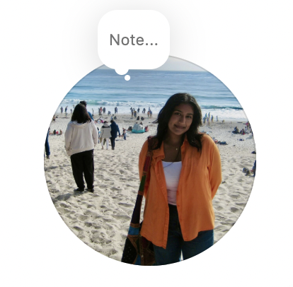
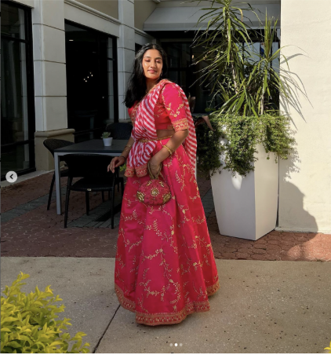
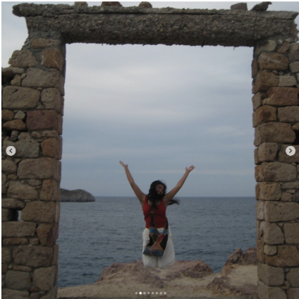

Background
What happens when you hand your digital wardrobe over to an LLM and ask it to form an opinion on your fashion sense?
For this experiment, I fed ChatGPT some pictures of outfits, a couple that I’ve posted on my Instagram.

The motivation behind this is to ascertain what will happen as LLMs insert themselves into social media as commenting bots or ad generators. I specifically sacrificed my Instagram, rather than stock photos, to get the data and results that I am most interested in.
Then I asked it to review them in with three distinct personas:
- A Vogue fashion editor
- A TikTok fashion influencer
- A friend who supports you through any decision
Let’s see how well GPT understands fashion contextually. Can an LLM analyze not just colors and fabrics, but also trends, fit, and aesthetics?
The Inputs
Outfit 1: Winter Sweater
Outfit 2: Cultural Clothing

Outfit 3: Greece Casual

The Reviews (Harsh or Kind?)
1. Vogue Fashion Editor
Prompt for each outfit: “Describe this outfit in the voice of a senior fashion editor at Vogue reviewing runway looks.”
Outfit 1: Winter Sweater
“Cozy, yet deliberate” This ensemble whispers understated chic. The oversized striped turtleneck sweater drapes with ease, pairing comfort with quiet sophistication. The soft palette of cool grays and blues is punctuated by a pop of pink from the handbag—an editorial touch that prevents the look from sliding into anonymity. It’s winter dressing at its most approachable: functional warmth elevated with a fashion-forward wink.
Outfit 2: Cultural Clothing
“A triumph of heritage as haute couture” Here, tradition is transformed into spectacle. The fuchsia lehenga is unapologetically bold, its golden embroidery and zari work shimmering like threads of sunlight. The striped dupatta slung across the shoulder modernizes the silhouette, making it less museum piece, more runway force. Accessories are chosen with precision: a structured potli bag in tonal embroidery and gleaming bangles that echo the fabric’s luster. This is cultural clothing not as costume, but as couture—alive, radiant, and utterly commanding.
Outfit 3: Greece Casual
“Effortless wanderlust in motion” Against the raw stone frame and endless Aegean backdrop, the look feels cinematic. A red sleeveless top is paired with flowing white trousers, the palette a deliberate nod to Mediterranean contrasts. The crossbody bag adds artisanal charm, its geometric patchwork quietly bohemian. Hair loose, arms raised, the outfit breathes freedom—an embodiment of travel chic where ease is the ultimate luxury.
My comments
I think that the LLM did well embodying the Vogue fashion editor persona. It was able to draw on a lot of external context when describing the outfits I sent it. Not only this, but it also was creative and unique in its description, making inferences about my intentions wearing the outfit rather than just turning image directly to text.
2. TikTok Fashion Influencer
Prompt for each outfit: “Rate this outfit like a TikTok fashion influencer doing a reaction video to someone’s instagram outfits. Be as kind as you want or roast them as much as you want.”
Outfit 1: Winter Sweater
Okayyy cozy vibes but also giving “I stole this from my dad’s closet” realness 😂 The stripes are safe, the turtleneck is warm, but it’s giving less sleigh queen and more sleigh ride with grandma. That said, the pink bag is a cute pop—like yes, accessorizeeee! Honestly, 6.5/10: solidly cute, but could use a little more main character energy.
Outfit 2: Cultural Clothing
STOP. THE. SHOW. 🔥🔥🔥 This hot pink + gold embroidery + striped dupatta? She’s not just attending the wedding, she IS the wedding. The matching embroidered purse?? Dead. This is giving regal Bollywood princess energy and I’m obsessed. If you’re not breaking necks walking in, are you even doing it right? 11/10. No notes. Perfection. 👑✨
Outfit 3: Greece Casual
This is such a vibeeee. Like picture this: stone ruins, ocean breeze, and she said “I am the goddess framed by history.” The red top + white skirt combo is casual but chef’s kiss Mediterranean chic. That patterned crossbody bag is the artsy touch—giving “I backpack through Europe and journal about my soul.” Honestly, this is effortless cool-girl travel fashion. 9/10.
My comments
I think that the LLM did a great job with the persona, but not as good of a job relating the image to the description. It picked up on one or two key characteristics of the outfit and focused more on talking/acting like a specific person rather than providing the review. An actual fashion influencer would not behave stereotypically as much.
3. Supportive Friend
Prompt for each outfit: “Describe, rate, and roast this outfit like my friend who supports me through anything, who’s known me forever, and will not lie to protect my feelings.”
Outfit 1: Winter Sweater
📍 Cozy vibes in front of the Christmas tree. Description: The oversized striped turtleneck screams “I’m warm, I’m comfy, and fashion is optional today.” It’s giving college finals week chic. Paired with the little pink bag, though, you low-key look like you’re on your way to brunch after acing those exams.
Rating: 7.5/10. Cute and cozy, but the sweater is kinda swallowing you whole.
Roast: Girl… you look like you stole this sweater from a dad named Carl who fixes cars on the weekend. But somehow, you still managed to make “dad-core” look Instagrammable. That’s talent.
Outfit 2: Greece Casual
📍 Arms in the air by the sea. Description: Red sleeveless top, flowy white skirt, and a bold patterned crossbody bag. Very “wanderlust study abroad catalog cover.”
Rating: 8/10. Carefree and cute, but that bag is doing way too much.
Roast: You look like you were two seconds away from shouting “OPA!” and tripping into the water. The outfit is vacation-perfect, but the bag? It’s giving “I bought this from the gift shop so I could blend in with locals,” but instead you stood out like the tourist you are.
Outfit 3: Cultural Clothing
📍 Bright pink lehenga with gold embroidery. Description: Absolutely stunning. The embroidery, the dupatta drape, the matching round bag — it’s all working. This is main character energy.
Rating: 11/10. No notes.
Roast: Honestly, roasting this feels illegal. The only critique I have is that you’re out here making everyone else at the event look like they got their outfit off Amazon for $39.99. It’s unfair.
My comments
Again, similar to the TikTok fashion influencer persona, the LLM seems to focus more on the character rather than the description. I think that a more human-like response would include a more normal opinion on the outfits with one or two words or maybe even just a slight tone that would indicate a persona.
Final Takeaways
SO, can GPT “see” fashion from a description?
Seems like it!
The LLM was able to describe the outfit well and used image traits to convey specific opinions. By taking on different personas, ChatGPT clearly formed unique thoughts about the outfits even though the look was the same. This makes me believe that the LLM may actually be thinking rather than just copy pasting pixel descriptions from the model it is trained on.
Maybe next I could prompt it to build outfits based on a pre-existing fashion sense…
Stay fashionably self-aware,
Mallika